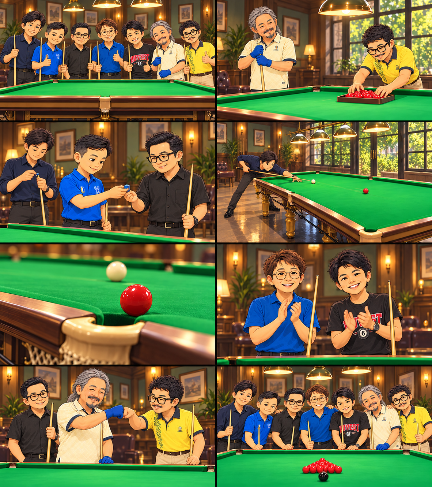

MSU SNOOKER · ตัวอย่างลำดับเรื่อง 40 วินาที
แมตช์นี้มีแชมป์ ทุกแมตช์มีเพื่อน
เรื่องสมมติของสมาชิกทั้ง 7 คน เพื่อสื่อถึงมิตรภาพในชมรม ไม่ใช่บันทึกผู้เข้าร่วมการแข่งขันวันใดวันหนึ่ง
ฉบับนี้ใช้ภาพท่าหลักเพื่อตรวจจังหวะเรื่อง ยังไม่มีภาพเคลื่อนไหวแขนขาต่อเนื่อง
ดูสตอรีบอร์ดทั้งหมด
